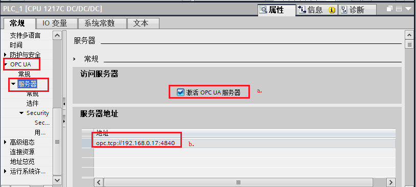
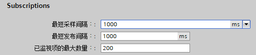

UA_Server¶
S7-1200 作为OPC UA 服务器，UA Expert作为OPC UA 客户端¶
S7-1200 CPU实现OPC UA 服务器的硬件和软件要求，如表1所示：
表1.S7-1200 CPU实现OPC UA 服务器的硬件和软件要求
组件 |
版本 |
备注 |
|
|---|---|---|---|
硬件部分 |
S7-1200 各型号CPU |
V4.4版本及以上 |
V4.4版本的S7-1200仅支持作为OPC UA的服务器 |
软件部分 |
TIA Porta STEP 7 Basic/Professional |
V16及以上 |
TIA V16起才可以组态V4.4 版本的S7-1200CPU |
OPC UA 许可证授权 |
SIMATIC OPC UA S7-1200 Basic |
6ES7823-0BA00-2BA0 |
纸质授权 S7-1200全系列CPU均使用该授权（一个PLC一个授权即可） |
测试客户端 |
Ua Expert |
一、激活S7-1200 OPC UA服务器并设置相关参数¶
1.创建PLC站点并设置IP地址
使用 TIA STEP7 V16 软件，创建S7-1200 CPU版本为V4.4的站点，如图1所示。
 -
-
图1.添加新设备
为CPU分配子网以及IP地址，如图2所示。
 -
-
图2.设置子网以及IP
2. 启动OPC UA服务器
进入“设备视图”，选中CPU，CPU属性 →OPC UA →服务器，勾选“激活OPC UA服务器”，如图3所示。

图3.启动OPCUA服务器
a.激活OPC UA 服务器
b.服务器地址：用于客户端访问服务器，激活S7-1200的OPC UA服务器功能后，该OPC UA服务器的地址为图中的：“opc:tcp://192.168.0.17:4840”，服务器地址格式为：“opc:tcp://服务器IP：服务器端口号”
3. 设置服务器相关参数
CPU属性 →OPC UA →服务器 →选件 →常规 属性对话框内，可以设置端口号、最大会话超时时间，最大OPC UA会话数量等参数，如表2所示。
表2.S7-1200 OPC UA 选件设置
OPC UA 选件 参数 |
备注 |
|---|---|
|
端口： 设置服务器的端口号，默认4840，允许范围：1024-49151之间 |
 |
服务器的订阅设置 |

4. Secure channel设置
仅当 OPC UA 服务器可向 OPC UA 客户端证明身份时，才能建立服务器与客户端之间的安全连接。服务器证书可用于证实身份。
CPU属性 →OPC UA →服务器 →Security →Secure channel，在此对话框内可以设置服务器证书、服务器上可用的安全策略、以及可信客户端，如表3所示。
表3.S7-1200 Secure channel设置
参数 |
备注 |
|
|---|---|---|
建立服务器证书 |
|
激活 OPC UA 服务器并确认安全提示后，STEP 7 会自动为服务器生成自签署证书，用户也可以生成由证书颁发机构签名的CA证书； |
设置服务器安全策略 |
调试初期可以考虑使用默认的 无安全设置 ，一旦调试结束，建议只选择与您的设备或工厂的安全概念兼容的安全策略，如果可能，请使用 Basic256Sha256 设置，并禁用所有其它安全策略。 |
|
设置可信客户端 |
使用可信客户端列表，以仅允许对特定客户端进行访问。此项为可选操作，可以直接选择下载的 运行时自动接受所有客户端证书 |

5. 用户身份验证
CPU属性 →OPC UA →服务器 →Security →用户身份验证，此参数可设置 OPC UA 客户端中用户访问服务器时需通过的认证方式，如图4所示。

图4.用户身份认证
a. 启用访客认证：用户无需证明其身份（匿名访问）。OPC UA 服务器不会检查客户端用户的授权。
b. 启用用户名和密码认证：用户必须证明其身份（非匿名访问）。OPC UA 服务器将检查客户端用户是否具备访问服务器的权限。并通过用户名和正确的密码进行身份验证，在下方"用户管理" 表中输入用户，最多可添加 21 个用户。
 注意！以上两个选项，建议仅在通信调试初期使用使用“启动访客认证”，调试结束后应启用“启用用户名和密码认证”，以确保通信安全。
注意！以上两个选项，建议仅在通信调试初期使用使用“启动访客认证”，调试结束后应启用“启用用户名和密码认证”，以确保通信安全。
6. 设置OPC UA 运行许可证
CPU属性 →运行系统许可证 →OPC UA →设置“购买的许可证类型”，S7-1200所有CPU所使用的许可证类型都是一种：SIMATIC OPC UA S7-1200 Basic，如图5所示。

图5.设置OPC UA 运行许可证
二、OPC UA服务器接口¶
标准的SIMATIC服务器接口不可用于S7-1200，必须使用“OPC UA 通信”中添加的服务器接口，通过这些服务器接口启用PLC变量后，方可对OPC UA客户端可见，具体见下文描述。
1. 新增服务器接口
项目树 PLC站点下，OPC UA 通信→服务器接口 →新增服务器接口，在弹出的“新增服务器接口”内选择“服务器接口”，如图6所示。

图6.新增服务器接口
2. 建立通信数据块，并设置相关属性
手动建立通信数据块“opc ua DATA”,并确保该DB 块的属性“数据从OPC UA可访问”处于勾选状态，如图7所示。

图7.新建通信DB块并确认其属性
3. 建立通信变量 双击打开新建的DB块，并建立通信的变量，并根据需求勾选不同变量的OPC UA 读写访问属性，如图8所示。

图8.设置各变量的OPC UA读写访问属性
4. 将OPC UA 元素连接至OPC UA 服务器接口
双击图6中新增的服务器接口，（项目树 PLC站点下，OPC UA 通信→服务器接口 →服务器接口_1 ),打开“OPC UA 服务器接口”对话框，将对话框右侧的OPC UA元素依次或者整体拖拽至左侧的服务器接口下方的空白行，如图9所示。
图9.将OPC UA 元素连接至OPC UA 服务器接口
OPC UA 测试客户端¶
S7-1200 CPU目前不支持OPC UA 的客户端功能，用户可以采用Unified Automation提供免费的OPC UA客户端"UaExpert"用于测试。点击下方的下载连接，注册、下载UaExpert并且安装成功。
UaExpert 测试步骤¶
添加OPC UA Server站点
打开UaExpert，在项目左侧，右键点击“Servers”添加服务器，如图10所示。

图10.添加UA Server1
打开“Add Server”对话框，在“Custom Discovey”下点击“Double click to Add Server”，在弹出的“Enter URL”对话框内输入S7-1200的OPC UA的服务器地址，如图11所示。
图11.添加UA Server2
添加成功后可以浏览到S7-1200的 OPC UA Server，选择对应的安全策略，本文以None-None（uatcp-uasc-uabinary）—无安全设置以及“Anonymous”匿名访问—访客权限 登陆，然后点击“OK”，如图12所示。

图12.添加UA Server3
连接OPC UA Server站点
S7-1200 OPC UA Server添加成功后右键选中点击“Connect”，连接服务器，如图13所示。

图13.连接UA Server
首次连接需要通信双方进行证书验证，UaExpert会弹出证书验证的窗口 ，如表4所示。
表4.UaExpert Certificate Validation
OPC UA 证书验证前 |
点击“Trust Server Certificate”后 → |
OPC UA 证书验证后 |
|---|---|---|
|
|


证书验证成功之后，就可以在地址空间窗口浏览S7-1200 OPC UA 支持的信息，单独选择某个节点可以在“Attributes”窗口查看该节点的属性，如图14所示。

图14.UA Server的数据访问
UA Expert针对UA Server的数据访问
**浏览：**不单独体现，通常与订阅、读写等组合使用，图14中查看地址空间也属于浏览。
**订阅、读写：**将变量拖拽之至“Data Access View”窗口内查看，该窗口默认存在，用户可以在“Value”列读或者写相关参数（双击变量Value列数据），通过“StatusCode”列获取该便量的通信状态，同时用户还可以在窗口范围之内点击右键，进行相关参数的设置。